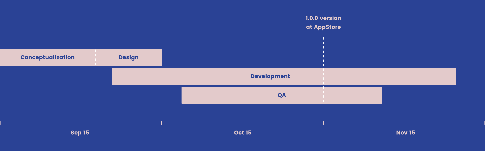

Itaca.
Adding gamification to bars.

What
Mobile Application - iOS
When
Sep - Nov 2015
Overview
Our goal was to create an easy way for 'Itaca' customers to pay their beers through their mobiles (Apple Pay did not exist yet). In order to create engagement the customers earn points for each payment and this lets them upgrade their 'status' and get special offers.
Project timeline
My role
As a UI Designer I was defining a basic architecture and the styling of the app based in an existing styleguide, guided by a senior designer. We applied native components to be faster.
What I learned
I am proud of this project because it was my first mobile app. Despite it was a small project it means to me the first interaction with a couple of new things like iOS & Android guidelines, designing in sprints with agile, working closely with developers and how this collaboration becomes rapidly into a real product.
More information
Check the project at the App Store.
©2019. All Rights Reserved.